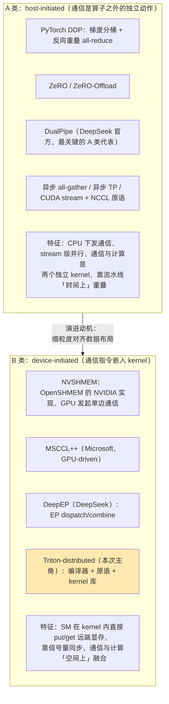
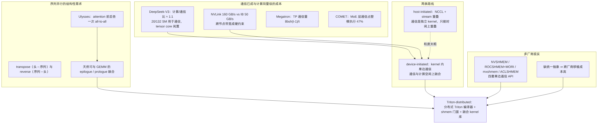
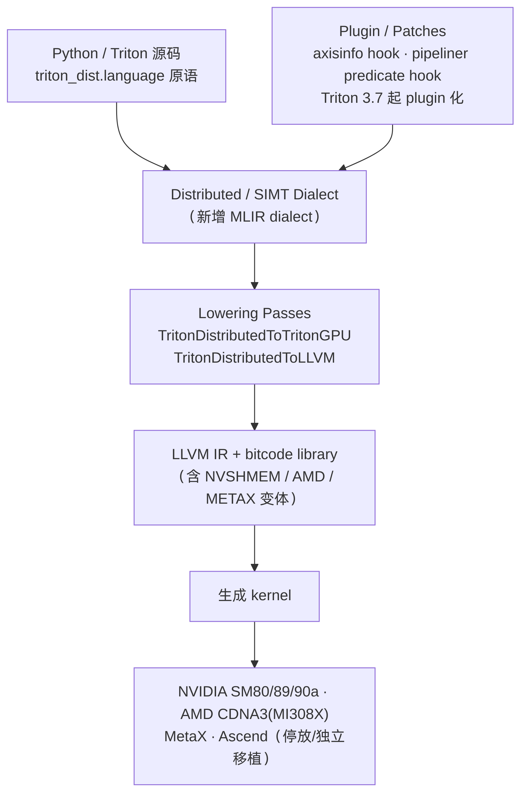
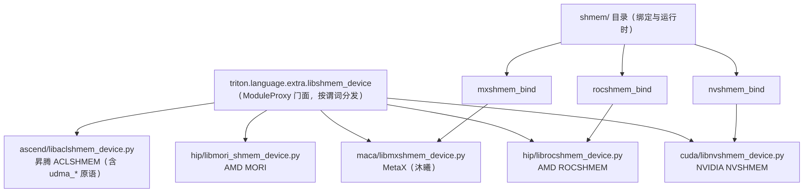
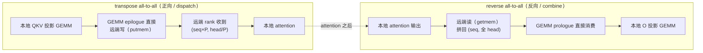
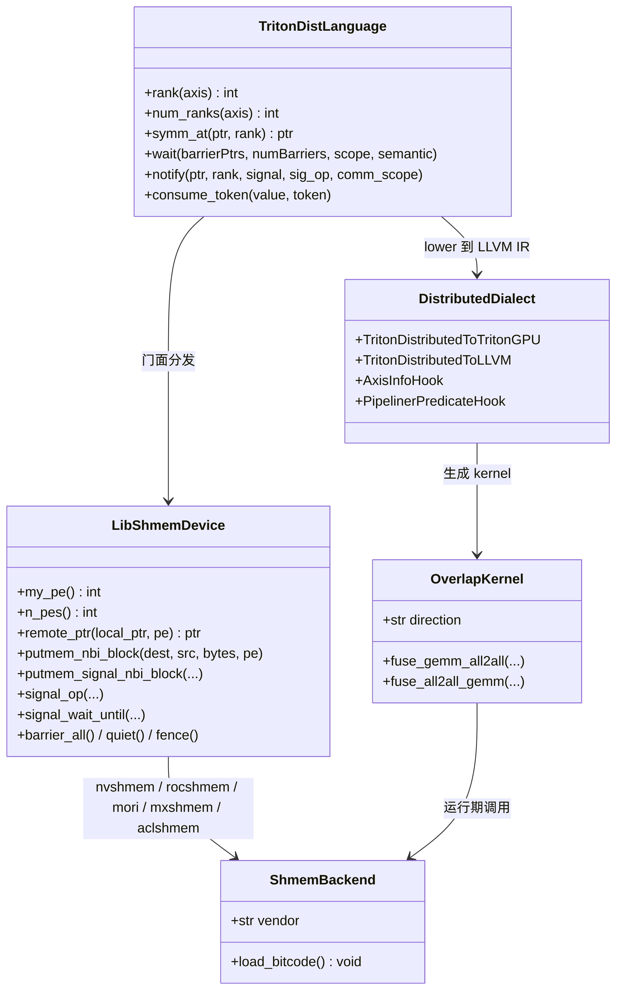
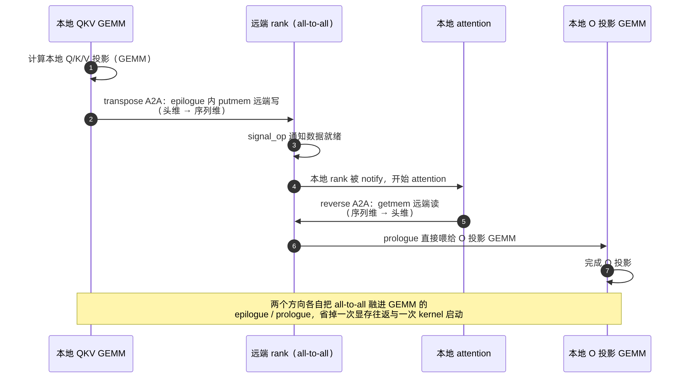
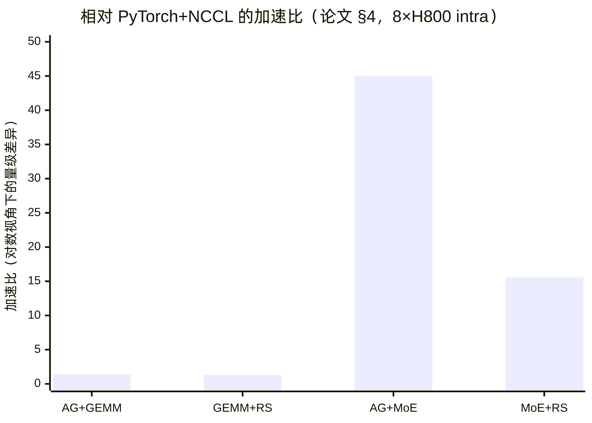

ByteDance Seed Triton-distributed 技术洞察 · 图表预览
对应文档：Seed-Triton-distributed-技术洞察.md ｜ 渲染源：assets/mmd/*.mmd
图 1 · host-initiated vs device-initiated 两条路线（§1.2）

td-d1-host-vs-device
图 2 · 通信成本 / 序列并行 / 多厂商三条线索（§1.5）

td-d2-problem-map
图 3 · 编译器实体与 lowering 路径（§2.3）

td-d3-compiler
图 4 · shmem 门面与五个后端实现（§2.4）

td-d4-shmem-backends
图 5 · transpose 与 reverse all-to-all 的数据流（§2.5.2）

td-d5-transpose-reverse
图 6 · 类图（§2.6，UML classDiagram）

td-d6-class
图 7 · 序列并行通算融合时序（§2.7，UML sequenceDiagram）

td-d7-sequence
图 8 · 相对 PyTorch+NCCL 的加速比（§2.8.1）

td-d8-speedup